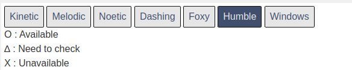

環境構築¶
環境構築が必要な物品は「TurtleBot3」「参加者用PC」の2点です。 基本的には、ROBOTIS社公式のe-manualに則ってセットアップを行いますが、 本ページでは参加者の皆様がスムーズにセミナーに参加できるように、セットアップ手順を補足します。
TurtleBot3用ラズベリーパイ
実習キットのTurtleBot3の上の段に格納されているラズベリーパイを使用します。 同包されているmicroSDカードを使用してセットアップを行います。
TurtleBot3用OpenCR
実習キットのTurtleBot3の下の段に格納されているOpenCR（青い基板）を使用します。
参加者用PC
Ubuntu22.04とROS 2 HumbleをインストールしたPCを用意いただきます。 最低限、1グループ1台のPCを用意いただければセミナーに参加いただけますが、参加者1人1台のPCを用意することを推奨します。
参加者用PCの環境構築¶
基本はROBOTIS社TurtleBot3のe-manualの「3.1 PC Setup」にしたがってください。
https://emanual.robotis.com/docs/en/platform/turtlebot3/quick-start/
Warning
e-manualを参照するときには、必ずページ上部の「Humble」ボタンを選択して参照するようにしてください。 
Ubuntu 22.04のインストール¶
詳細はe-manualや公式チュートリアルを参照いただくことになりますが、大まかな手順は以下の通りです。
- Ubuntu 22.04 Desktopのディスクイメージのダウンロード
- USBメモリへディスクイメージへの書き込んでインストールメディアを作成する
- インストールメディアからUbuntu 22.04 Desktopをインストールする
Info
インストール用メディアを作るためのUSBメモリなどが必要になります
Note
e-manualや公式チュートリアルでは英語版のUbuntu22.04のインストール手順が記載されていますが、以下のサイトから日本語版のダウンロードも可能です。
Ubuntu Desktop 日本語 Remixのダウンロード
Note
VirtualBoxやDockerなどの仮想環境を使用してもかまいませんが、正常動作しない場合への対応はできかねますので自己責任にてお願いします。
ROS 2 Humble¶
公式ガイドにしたがってROS 2 Humbleをインストールしてください。
Note
インストール作業だけでなく、同ページの「Try some examples」に書かれている簡単な動作確認も併せて行っていただくと、当日のトラブルのない進行につながります。
TurtleBot3用ラズベリーパイの環境構築¶
基本はROBOTIS社TurtleBot3のe-manualの「3.2 SBC Setup」にしたがってください。
Info
ラズベリーパイの環境構築には以下のものが必要です。
- microSD/SDカードに書き込み可能なPC（直接microSC/SDを扱えない場合はカードリーダーを使用する）
- mini-HDMIケーブル（ラズベリーパイの画面出力用）
- ディスプレイ（ラズベリーパイの画面出力用）
- USBキーボード（ラズベリーパイの操作用）
- USBマウス（ラズベリーパイの操作用）
Tips
Ubuntu 22.04 Desktop ではなく Ubuntu 22.04 Server をインストールすることに注意してください。
Tips
公式e-manualに「/writable/etc...」などから始まるファイルパスが記載されていることがあります。
このファイルパスが存在しない場合は、/etc/...などに読み替えてください。
Note
e-manualでは、ROS_DOMAIN_IDを30に設定する記述がありますが、セミナー当日はグループ間での通信の混線を避けるため、オーガナイザーが指定する別々のROS_DOMAIN_IDを設定してもらいます。
OpenCRのセットアップ¶
ROBOTIS社TurtleBot3のe-manualの「3.3 OpenCR Setup」にしたがってください。